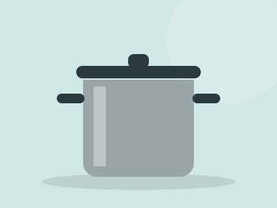

About Saipan Online Kitchen Supply
A local business making durable kitchen supplies easier to find in the CNMI.
Our story
Why we started
In the Northern Mariana Islands, food brings people together, from weeknight family dinners to fiestas and community events where cooking for a crowd is part of the tradition. Good kitchen tools make all of that easier.
Finding durable and trusted practical kitchen supplies on island can take time. Saipan Online Kitchen Supply was created to bring product and business information together in one place, so customers can see what we offer and reach us quickly.

Who we serve
Kitchens of every size
- Home cooks and families: everyday pots, pans, and tools that last.
- Party and fiesta cooks: large stockpots, sheet pans, and storage for big batches.
- Restaurants and food businesses: dependable equipment and bulk-order inquiries.